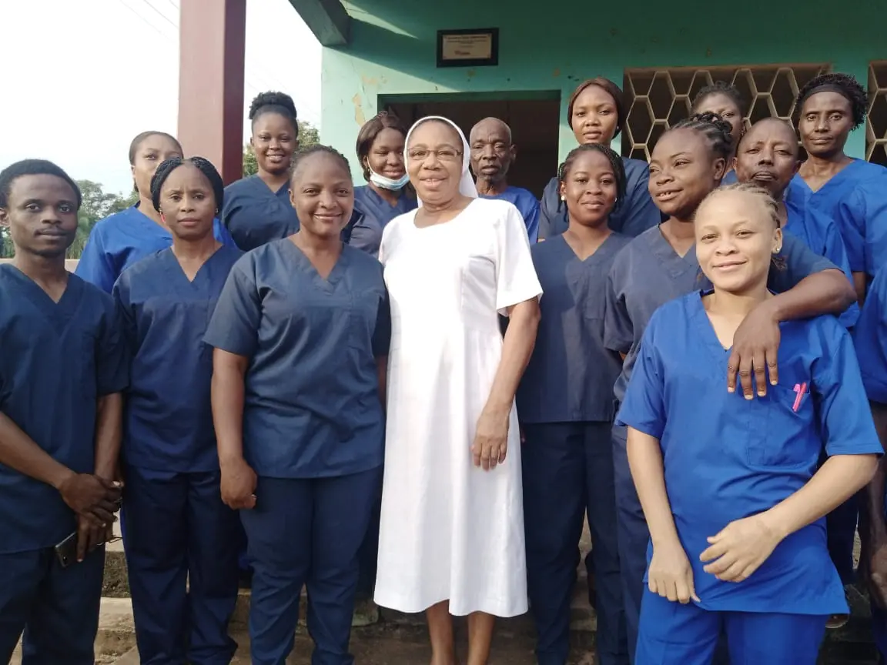
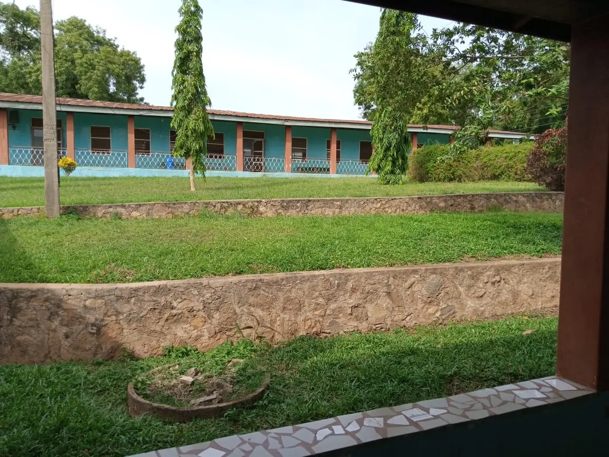
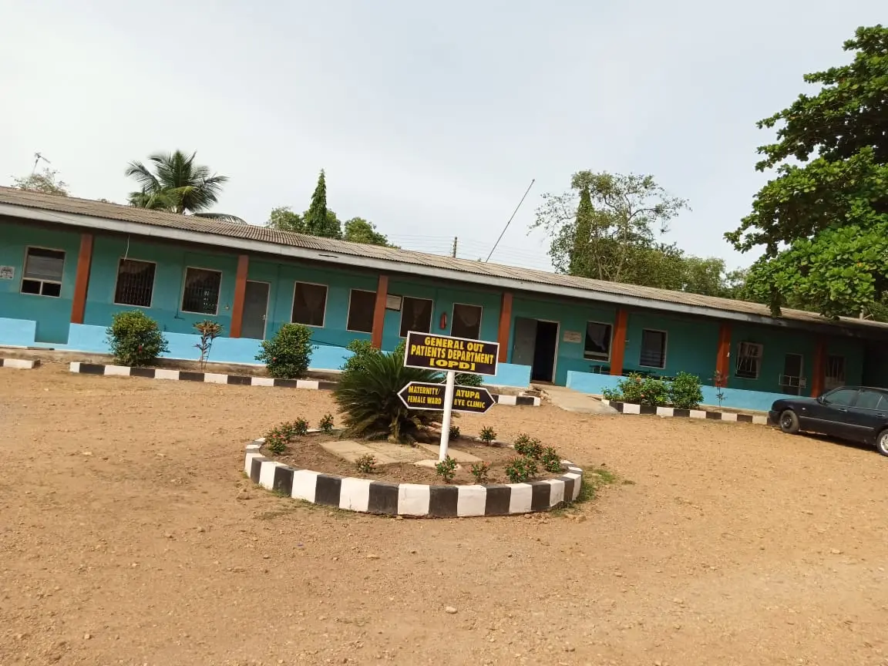
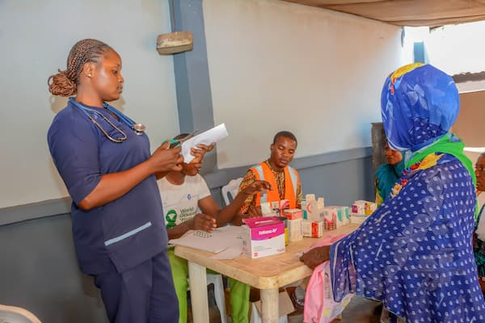

Everyday
8:00 AM - 4:00 PM
General Outpatient Clinic
Professional consultation, diagnosis, and treatment for everyday health concerns, routine medical checkups, and general patient care.
Trusted Care, Health with Heart
Serving your wellness with compassion always.


|

Our Lady Catholic Hospital is a Private hospital owned by Catholic Diocese of Oyo, located at Isalu 7, lseyin Local Government area, Oyo State, Nigeria.

We aim at improving the quality of life of people especially the underprivileged through providing holistic and quality health care that affirms the dignity and respect of human life.

We challenge ourselves to working together and to ensure that through our health care intervention the world is healed, unified and transformed by the saving wisdom of Christianity.
 Laboratory
Laboratory
 Emergency
Emergency
 Pharmacy
Pharmacy
 Pediatrics
Pediatrics
 Haart to Heart
Haart to Heart
 UltraSound Scan
UltraSound Scan
 Physiotherapy
Physiotherapy
 Surgeries
Surgeries
 Ambulance
Ambulance
 Cervical Cancer Screening
Cervical Cancer Screening
Immediate medical response when it matters most
Call NowAddress: Our Lady Catholic Hospital, Iseyin, Oyo State, Nigeria.
Phone: +234 906 547 6623
Email: olchiseyin@gmail.com
Available 24/7
+234 906 547 6623
Stay informed about our weekly specialist and general clinic schedule. We are committed to delivering timely, compassionate, and professional healthcare services.
Professional consultation, diagnosis, and treatment for everyday health concerns, routine medical checkups, and general patient care.
Professional prenatal care and maternal health support for expecting mothers.
Routine child health monitoring, immunization, and pediatric preventive care.
Confidential screening, counseling, education, and preventive care services aimed at promoting early detection, awareness, and better long-term health outcomes.
Diagnostic support, test follow-up, and medical review consultations for ongoing care.
Selected appointments, specialist review, and urgent non-emergency consultations.

For safely transporting patients within hospital, especially in emergencies.

Removes fluids during medical procedures.

Adjustable table for patient examination.

Provides bright lighting during procedures.
Stay informed with our hospital updates and trusted health news.

Our hospital recently organized a free medical outreach providing checkups and medications to over 300 community members...
Our hospital recently organized a free medical outreach providing checkups, laboratory screening, blood pressure monitoring, and medications to over 300 community members. The event was conducted by our qualified medical team and aimed at improving preventive healthcare awareness.
Hypertension remains one of the leading causes of heart disease worldwide...
Hypertension remains one of the leading causes of heart disease worldwide. Regular monitoring, healthy eating habits, reduced salt intake, and routine medical checkups are essential preventive steps. Early detection significantly reduces complications.
Find answers to common questions about our services, admissions, and patient care.
Yes, we accept selected HMOs and private insurance plans. Please contact us here for confirmation.
Our laboratory uses certified equipment and follows strict quality control standards.
Yes, our emergency and inpatient services operate 24 hours daily.
Please bring your medical records, valid ID, personal essentials, and any required admission documents.
Follow your doctor's instructions, including fasting guidelines and pre-surgery tests.
Yes, we offer private wards designed for comfort, privacy, and personalized care.